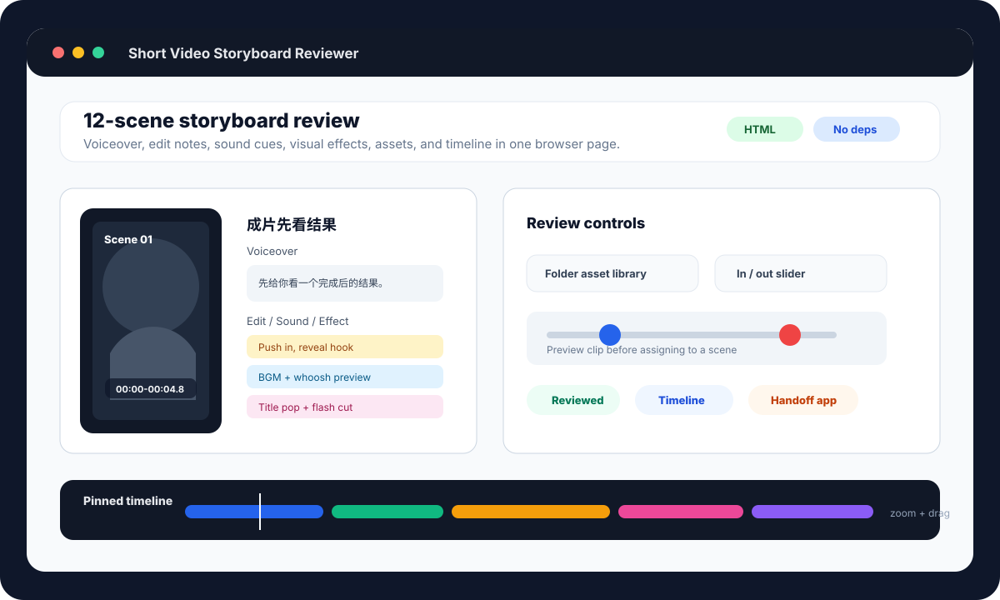

Review short-video storyboards locally.
Turn a Markdown storyboard into an interactive review page with scene previews, edit notes, sound cues, effect notes, asset matching, and a pinned timeline.

What it creates
Interactive HTML review
Scene cards, editable notes, media previews, review states, and timeline controls in one local browser page.
Editor-ready exports
Review report, subtitles, asset checklist, and timeline JSON generated from the same storyboard table.
macOS handoff package
Package the review page and media into a standalone app for another Mac or a local network review session.
Quick start
python3 video_md_tool.py examples/storyboard_sample.md --out examples/c451_tool_output
open examples/c451_tool_output/storyboard_preview.html